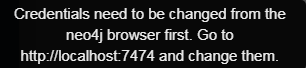
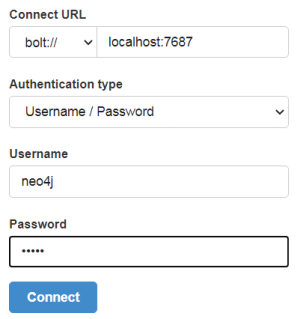
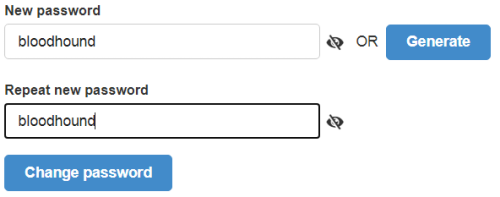
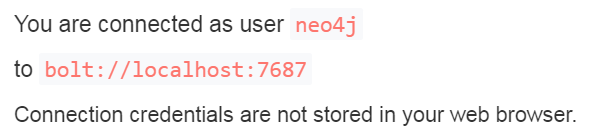
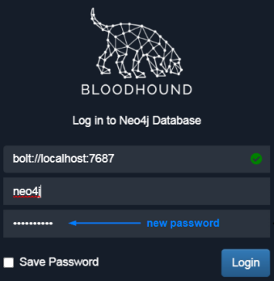

Installation of BloodHound and Neo4j
BloodHound-win32-ia32.zip (Windows
32 bit)
PS> (new-object System.Net.WebClient).DownloadFile("https://github.com/BloodHoundAD/BloodHound/releases/download/4.0.1/BloodHound-win32-ia32.zip", "$env:userprofile\desktop\file.zip");$ZippedFilePath = "$env:userprofile\desktop\file.zip";$DestinationFolder = "$env:userprofile\desktop\";[void] (New-Item -Path $DestinationFolder -ItemType Directory -Force);$Shell = new-object -com Shell.Application;$Shell.Namespace($DestinationFolder).copyhere($Shell.NameSpace($ZippedFilePath).Items(),4);Remove-Item -Path "$env:userprofile\desktop\file.zip";cd "$env:userprofile\desktop\BloodHound-win32-ia32\";.\BloodHound.exe;
Neo4j Community ServerIt is the database service, we need it to work
with BloodHound
To know the exact link from which the file is downloaded we can Download the file in the
browser and then on the file “Copy Download Link”
https://neo4j.com/download-center/#community →
https://go.neo4j.com/download-thanks.html?edition=community&release=4.2.3&flavour=winzip
→
https://s3-eu-west-1.amazonaws.com/dist.neo4j.org/neo4j-community-4.2.3-windows.zip
◇ Windows 64 bit (Neo4j Server 4.x)
PS> (new-object System.Net.WebClient).DownloadFile("https://s3-eu-west-1.amazonaws.com/dist.neo4j.org/neo4j-community-4.2.3-windows.zip","$env:userprofile\desktop\file.zip");$ZippedFilePath = "$env:userprofile\desktop\file.zip";$DestinationFolder = "$env:userprofile\desktop\";[void] (New-Item -Path $DestinationFolder -ItemType Directory -Force);$Shell = new-object -com Shell.Application;$Shell.Namespace($DestinationFolder).copyhere($Shell.NameSpace($ZippedFilePath).Items(),4);Remove-Item -Path "$env:userprofile\desktop\file.zip";cd "$env:userprofile\desktop\neo4j-community-4.2.3\bin\";Invoke-Expression "$env:userprofile\desktop\neo4j-community-4.2.3\bin\neo4j.bat Install-Service";Invoke-Expression "$env:userprofile\desktop\neo4j-community-4.2.3\bin\neo4j.bat";
◇ Windows 32 bit (Neo4j Server 3.x)
PS> (new-object System.Net.WebClient).DownloadFile("https://s3-eu-west-1.amazonaws.com/dist.neo4j.org/neo4j-community-3.5.26-windows.zip","$env:userprofile\desktop\file.zip");$ZippedFilePath = "$env:userprofile\desktop\file.zip";$DestinationFolder = "$env:userprofile\desktop\";[void] (New-Item -Path $DestinationFolder -ItemType Directory -Force);$Shell = new-object -com Shell.Application;$Shell.Namespace($DestinationFolder).copyhere($Shell.NameSpace($ZippedFilePath).Items(),4);Remove-Item -Path "$env:userprofile\desktop\file.zip";cd "$env:userprofile\desktop\neo4j-community-3.5.26\bin\";Invoke-Expression "$env:userprofile\desktop\neo4j-community-3.5.26\bin\neo4j.bat Install-Service";Invoke-Expression "$env:userprofile\desktop\neo4j-community-3.5.26\bin\neo4j.bat";
To confirm that Neo4j is running:
PS> Invoke-Expression "$env:userprofile\desktop\neo4j-community-3.5.26\bin\neo4j.bat status";
To work Neo4j need java:
Download Java from
https://www.oracle.com/java/technologies/java-se-glance.html.
◇ JDK 11 for 64 bit architectures → Neo4j Server 4.x
◇ JDK 8 for 32 bit architectures → Neo4j Server
3.x
To get OS architecture
PS> wmic os get osarchitecture
After the Installation the changes will take effect only on the new sessions of Powershell.
If we have a problem with JVM.DLL see this post:
https://github.com/neo4j/neo4j/issues/12057Execution
of BloodHound After the Installation of Neo4j, we should see a green ok near the the address, like
the below one:
Default Neo4j
Username and Password are both “neo4j” but if we try to insert them:
We have to insert the default these default credentials("neo4j")
at
http://localhost:7474 Now we can create a new password of our choice(cannnot be “neo4j” because
old and new passwords cannot coincide)
Nice!
Now we can come back to Bloodhound and access from there
